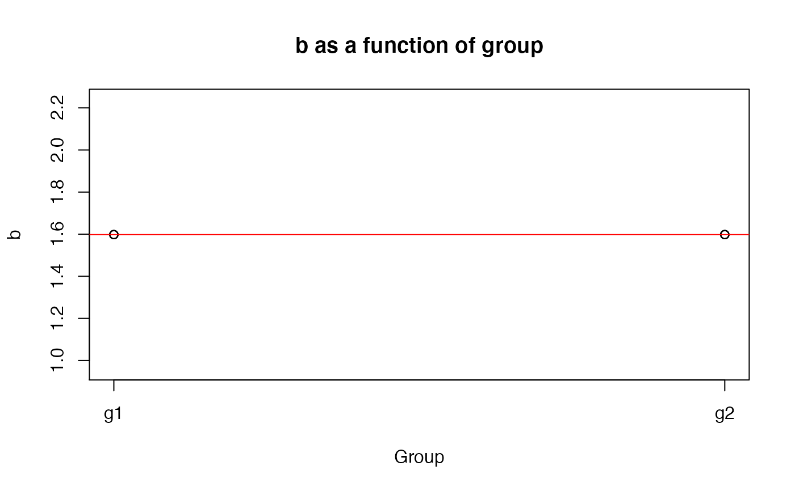

This function allows you to calculate b from a vector hits and a vector a false alarms.
b(data, h, f)
| data | A data frame. |
|---|---|
| h | A vector of hits (0 = miss, 1 = hit). |
| f | A vector of false alarms (0 = correct rejection, 1 = false alarm). |
# Create some data set.seed(1); library(dplyr) axb <- data.frame(subj = sort(rep(1:10, each = 20, times = 10)), group = gl(2, 1000, labels = c("g1", "g2")), hit = c(rbinom(1000, size = c(0, 1), prob = .8), rbinom(1000, size = c(0, 1), prob = .6)), fa = c(rbinom(1000, size = c(0, 1), prob = .3), rbinom(1000, size = c(0, 1), prob = .4)) ) # Calculate b on entire data frame b(axb, hit, fa)#> [1] 1.598001# Calculate b for each subject # by group, plot it, and run a # linear model axb %>% group_by(subj, group) %>% summarize(b = b(., hit, fa)) %T>% { plot(b ~ as.numeric(group), data = ., main = "b as a function of group", xaxt = "n", xlab = "Group", ylab = "b") axis(1, at = 1:2, labels = c("g1", "g2")) abline(lm(b ~ as.numeric(group), data = .), col = "red") } %>% lm(b ~ group, data = .) %>% summary()#> Warning: essentially perfect fit: summary may be unreliable#> #> Call: #> lm(formula = b ~ group, data = .) #> #> Residuals: #> Min 1Q Median 3Q Max #> -1.404e-16 -1.404e-16 0.000e+00 0.000e+00 5.617e-16 #> #> Coefficients: #> Estimate Std. Error t value Pr(>|t|) #> (Intercept) 1.598e+00 9.930e-17 1.609e+16 <2e-16 *** #> groupg2 -1.404e-16 1.404e-16 -1.000e+00 0.347 #> --- #> Signif. codes: 0 ‘***’ 0.001 ‘**’ 0.01 ‘*’ 0.05 ‘.’ 0.1 ‘ ’ 1 #> #> Residual standard error: 2.22e-16 on 8 degrees of freedom #> Multiple R-squared: 0.619, Adjusted R-squared: 0.5714 #> F-statistic: 13 on 1 and 8 DF, p-value: 0.006926 #>